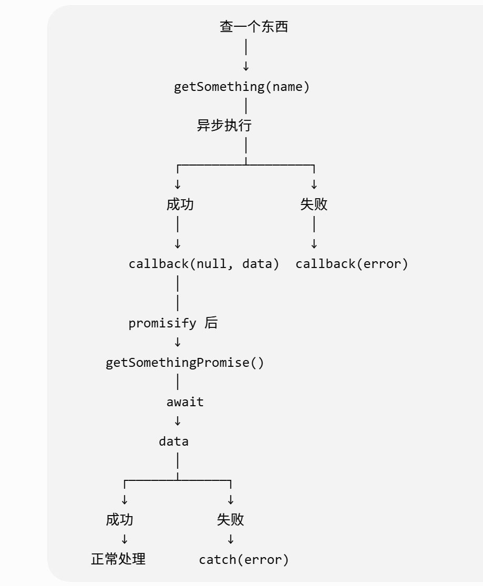
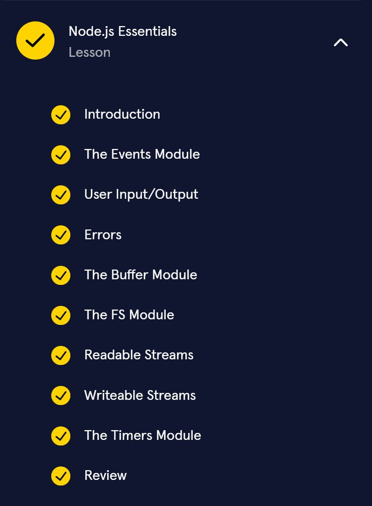
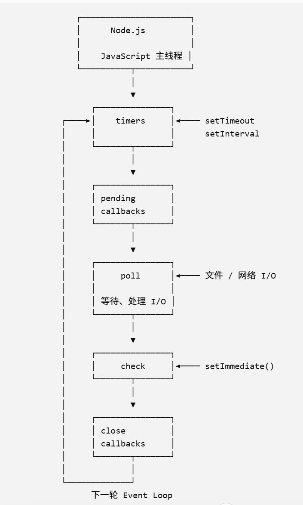
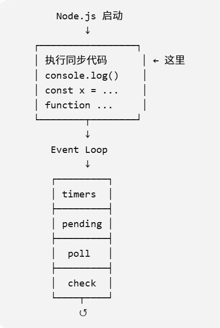

Codecademy Record 06
Learn Node.js: Fundamentals
Chapter 1: Introduction to Node.js
Awesome work! You’ve learned a lot about some fundamental Node.js concepts and modules. Let’s take a moment to review what we learned:
- Node.js is a JavaScript runtime, an environment that allows us to execute our JavaScript code by converting it into something a computer can understand.
- REPLs are processes that read, evaluate, print, and repeat (loop), and Node.js comes with its own REPL we can access in our terminal with the node command.
- We run JavaScript programs with Node in the terminal by typing node followed by the absolute or relative path to the file (relative to the working directory in the terminal).
- Code can be organized into separate files, or modules. Modules may be used in another file importing them with the require() function.
- Core modules are built into the Node.js environment to efficiently perform common tasks.
- The console module exports a global console object allowing the terminal to act as a debugging console, similar to the JavaScript console object provided by web browsers.
- The process module is a global module that gives access to information about the Node.js runtime environment.
- The os module provides methods to retrieve information about the computer, operating system, and network interfaces.
- The util module contains methods used to maintain and debug your code.
You learned some of the key core modules built into Node.js, but as you know, there are many more. You can even create your own modules, as well as use third-party modules built by other developers. But don’t worry! A good thing to remember when learning Node is that it’s not necessary to memorize every module, method, or other specific aspects of the environment. The best way to get comfortable with Node is to practice making things with it. Your imagination is the limit! So keep going to learn how to download Node on your local machine.
Great work! We’re excited to see what you build!
util.promisify认知模型

（刚开始的异步执行可以用类似setTimeOut()来弄）
四个记忆点
① Callback
callback(error, result)
查完以后叫我。
② Error-first
callback(null, result) // 成功
callback(error) // 失败
第一个参数永远优先表示错误。
③ Promisify
const promiseFn = util.promisify(callbackFn);
把 callback 函数变成 Promise 函数。
④ Async/Await
try {
const result = await promiseFn();
} catch (error) {
// 处理错误
}
等待结果，成功拿数据，失败进 catch。
总而言之，用到可以再查，现在理解了就行
What is Node?
Node.js is a JavaScript runtime, which is an environment that executes JavaScript code. Web browsers also contain a JavaScript runtime environment. A “runtime” converts code written in a high-level, human-readable programming language (such as JavaScript) and compiles it down to code that the computer can execute. Node was created with the goal of building web servers and web applications in JavaScript, but it’s a powerful and flexible environment that can be used for building a wide range of applications.
Fs Module:
① Callback
const { readFile } = require('fs');
readFile('./file.txt', 'utf-8', (err, data) => {
if (err) {
console.log(err);
return;
}
console.log(data);
});
异步 + callback
② Promise
const { readFile } = require('fs/promises');
readFile('./file.txt', 'utf-8')
.then(data => {
console.log(data);
})
.catch(err => {
console.log(err);
});
异步 + Promise
③ Sync
const { readFileSync } = require('fs');
try {
const data = readFileSync('./file.txt', 'utf-8');
console.log(data);
} catch (err) {
console.log(err);
}
同步 + try/catch
④ Promise + async/await
实际上还可以写成：
const { readFile } = require('fs/promises');
async function main() {
try {
const data = await readFile('./file.txt', 'utf-8');
console.log(data);
} catch (err) {
console.log(err);
}
}
main();
异步 + Promise + async/await + try/catch
Readable Streams
Eg
const readline = require('readline');
const fs = require('fs');
const myInterface = readline.createInterface({
input: fs.createReadStream("shoppingList.txt")
})
function printData(data){
console.log(`Item: ${data}`)
}
myInterface.on('line', printData)
Chapter 2: Node.js Essentials
Congratulations on making it to the end! Let’s take a moment to review the content covered in this lesson:
- Blocking code runs synchronously, and non-blocking code, such as timer functions, runs asynchronously. Core modules are provided to developers to perform common tasks efficiently. They are used by passing a string with the module’s name into a require() statement and storing the result in a variable.
- We can create our own instances of the EventEmitter class, which provides an .on() method for subscribing to listen for named events and an .emit() method for emitting named events.
- Node allows for both output, data/feedback to a user provided by the computer, and input, data/feedback to the computer provided by the user.
- To handle errors during asynchronous operations, many asynchronous APIs expect error-first callback functions. Many asynchronous APIs also have a version whose methods return Promise objects instead.
- The buffer module provides Buffer objects that represent a fixed amount of memory that cannot be resized.
- The timer module provides functions that allow developers to execute callbacks after a specified point in time in the future.
- The Node fs core module is an API for interacting with the file system.
- Streams allow us to read or write data piece by piece instead of all at once.
本章节内容：


一个认知模型 Event Loop

可以这样认识：
同步代码
↓
先全部执行
↓
Event Loop